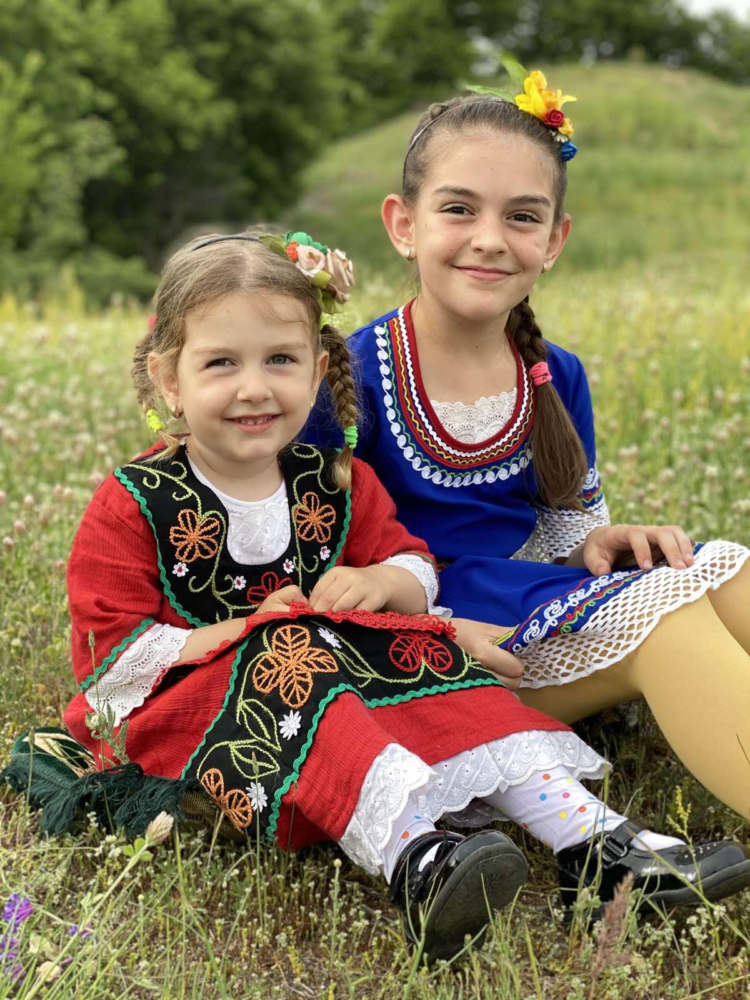
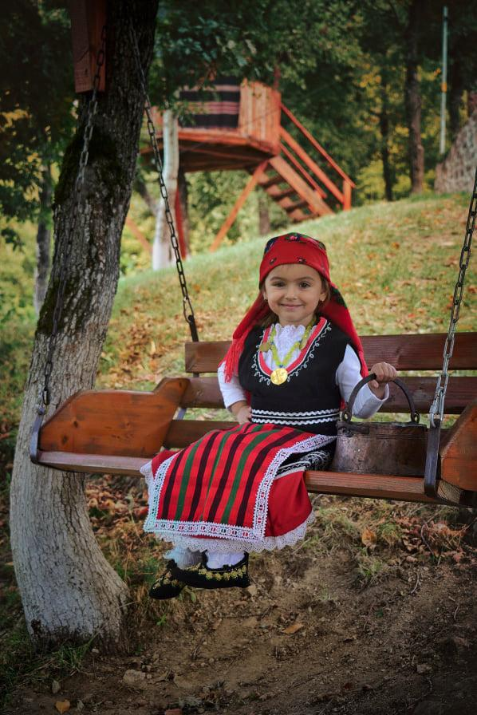

Шестото издание на фотоконкурса „Аз раста патриот” започва от 15 септември

Шестото издание на фотоконкурса „Аз раста патриот” започва на 15 септември, съобщиха от Областната администрация в Смолян. Конкурсът за фотографии на деца в национални носии се организира от Областната администрация, а е създаден като ежегодно събитие от журналиста Петя Гайдарова.
От 15 септември до 25 октомври ще се приемат снимки за участие в „Аз раста патриот”. В конкурса могат да кандидатстват фотографии на деца до 18 години, пременени в български носии. Допълнителните условия в регламента са посочени на интернет сайта на Областната администрация.

Наградите в 4 възрастови категории ще се присъждат на самите деца, а не на авторите на фотографиите. При петте досегашни издания конкурса се създаде галерия от стотици красиви снимки на деца, оживяващи колорита на българските носии.
Заедно с „Аз раста патриот” се провежда и конкурс за разказ „Видях доброто”, в който могат да участват ученици от 5 до 12 клас.